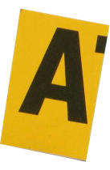


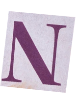

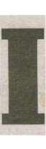
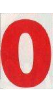
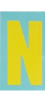
T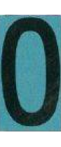
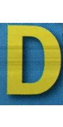
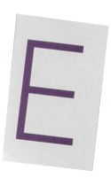
T IL
IL
Good design goes unnoticed. Bad design never does.
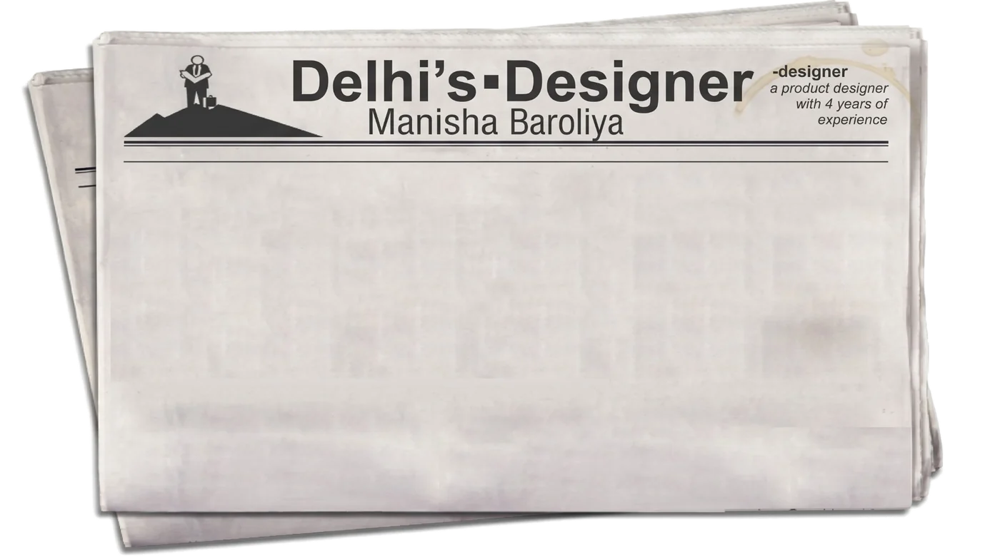
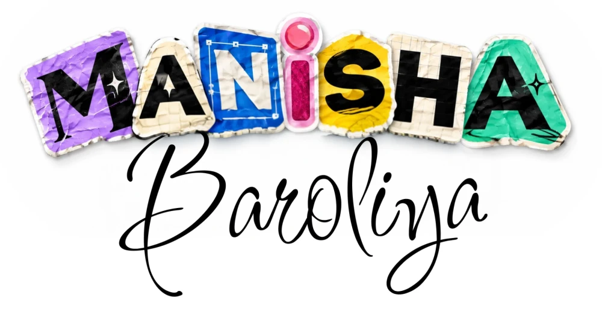
VALUE
Every letter is cut from a different scrap — just like my process. I collect research, behaviour and data from everywhere, then piece it together into one clear, usable product.
MY JOURNEY

- Started BA Psychology, Delhi University2017
- 2020Graduated — now curious about
why people click what they click - Google UX Design Certificate2021
- 2022UX/UI Design Program, Ducat Academy
- UX/UI Designer, Flashcube IT2023
- 2024UX/UI & Product Designer,
RCV Technologies - Product & Brand Designer, Cubezix2026
WHERE IDEAS START
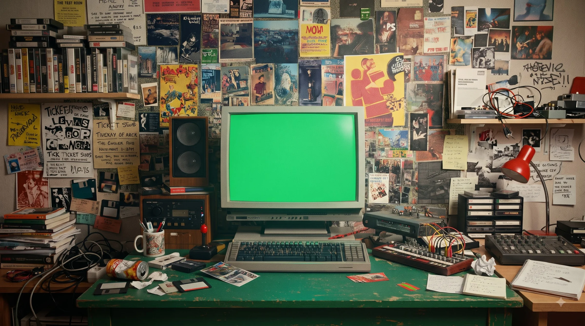
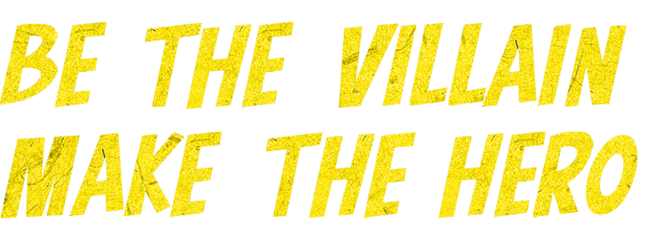
I question every assumption so your users never have to.
3+ years, 10+ SaaS & B2B platforms,
and a psychology degree behind every decision.
Usability tests and flow audits that cut click-depth
by 2–3 steps for daily users.
SYSTEMS
A 200+ component Figma system with WCAG 2.2 built in,
~40% fewer UI inconsistencies.
DESIGN
POS, KDS and role-based dashboards that turn 5+
scattered workflows into one clear screen.
PROTOTYPING
Interactive Figma, Framer, Rive and Spline 3D prototypes
that feel real before a line of code exists.
DESIGN
Web and mobile apps from first sketch to production,
handed off with clean, dev-ready specs.
DESIGN
Clear, trustworthy flows for payments, onboarding and
money dashboards, where every step has to feel safe.
DESIGN
Lovable, AI Studio, Firefly and Claude in the loop,
25–30% faster from concept to wireframe.
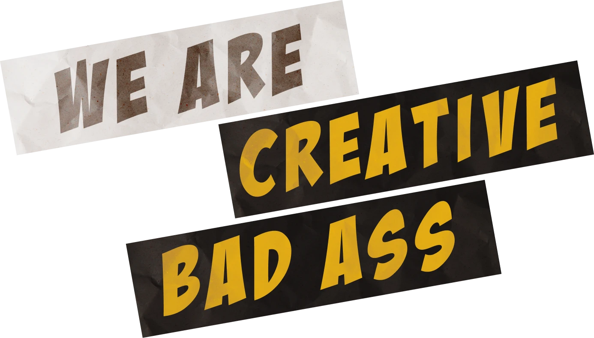
- NAME.
- Manisha Baroliya
- FEATURE.
- Psychology grad who can't stop asking "why?".
Turns messy, multi-tool workflows into one clear screen —
last caught cutting a 7-step flow down to 3. - KNOWN FOR.
- Figma (expert) · Design systems · WCAG 2.2 · Spline 3D · Rive · Framer
I design one clear screen out of five messy workflows
Product & UX/UI designer with 3+ years shipping end-to-end product design across 10+ SaaS and B2B platforms — research first, then systems, then screens that ship.
Services: UX research, design systems, dashboard design, advanced prototyping, application design, fintech design, AI-assisted design.
Experience
-
01
Cubezix
Lead end-to-end UX/UI and brand design across 10+ SaaS and web platforms — restaurant tech, marketing automation and B2B — working directly with founders and engineering.
-
02
RCV Technologies
Built a 200+ component Figma design system with WCAG 2.2 built in, cutting UI inconsistencies ~40%. Shipped the restaurant SaaS, Loop Lynks and Const-ant.
-
03
Flashcube IT
Designed 8+ responsive websites and landing pages, from brief to high-fidelity Figma prototype, and restructured the information architecture of 3 client interfaces.